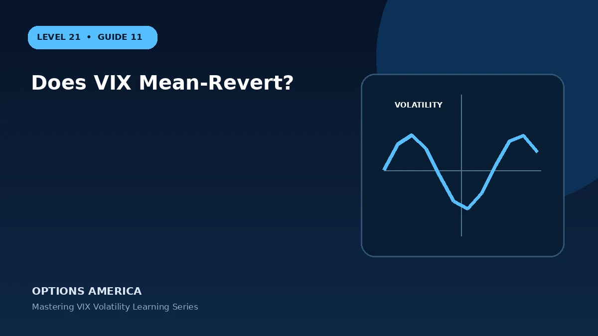

Use mean reversion carefully while respecting regime shifts, clustering and asymmetric spikes.
Plan execution and liquidity
Choose contracts that can be managed under the adverse scenario, not only entered during calm conditions. For does vix mean-revert?, verify expiration dates, settlement conventions, multipliers and broker handling. Place the order as a defined package when possible and audit the position immediately after it fills.
Define management before entry
The exit plan should identify what will be harvested and what risk will remain. In vix fundamentals, an unrealized hedge gain or volatility profit can disappear as quickly as it appeared. Use observable triggers and account-level limits so the decision does not depend on finding the perfect market top or bottom.
Start with the objective
Begin by separating forecast from objective. In does vix mean-revert?, the forecast describes price or volatility; the objective states what the account needs. Use mean reversion carefully while respecting regime shifts, clustering and asymmetric spikes. A clear objective includes a review date, budget and maximum acceptable drawdown, not merely a directional opinion.
Understand the economic exposure
Focus on the combined payoff rather than celebrating the leg that happens to be profitable. VIX has historically shown mean-reverting behavior, but neither the timing nor destination of a reversal is fixed. Record entry values and the contract multiplier so percentages do not conceal dollar risk. Reprice the position whenever the underlying driver changes materially.
Measure more than one outcome
Build a scenario table for does vix mean-revert? using at least five outcomes and two dates. Combine price moves with higher and lower volatility rather than changing one input at a time. Include a discontinuous gap and a wider bid-ask spread; the adverse cases determine whether the proposed size is survivable.
Check the changing Greeks
Use Greeks as sensitivities, not promises. A delta estimate assumes a small move and other inputs held constant, while real markets move price, time and volatility together. For does vix mean-revert?, inspect both the current values and how they change in the stress scenarios already defined.
A practical example
VIX at 40 can fall quickly, remain elevated, or spike higher before reverting; a short position must survive every path.
This simplified example is educational and focuses on selected outcomes. Live prices also reflect time, implied volatility, skew, rates, dividends where applicable, liquidity, settlement conventions and transaction costs. Greeks and scenario values are estimates, not guarantees.
Decision checklist
Confirm the market thesis and time horizon. Calculate the full-position payoff and premium at risk. Stress price, volatility and time together. Check contract specifications and settlement. Set the maximum account-level loss, reserve capital and exit trigger. Finally, record the result after closing so the next decision is based on evidence rather than memory.
Frequently asked questions
What is the key idea behind Does VIX Mean-Revert??
VIX has historically shown mean-reverting behavior, but neither the timing nor destination of a reversal is fixed.
Does the example guarantee a live-market result?
No. It is an educational scenario; live prices, volatility, liquidity, costs and contract terms can change the outcome.
What should be defined before entry?
The objective, size, maximum tolerated loss, review triggers, settlement or assignment plan and exit date.
Continue the Mastering VIX Volatility cluster
Explore related guides: VIX Trading: 10 Mistakes to Avoid · Why Is VIX Called the Fear Index? · VIX Futures vs Spot VIX. For a structured sequence, use the free Level 21 – Mastering VIX Volatility course.
Options and volatility products involve risk and are not suitable for every investor. This material is educational and is not investment, tax or legal advice. Verify current contract specifications with the exchange and your broker.